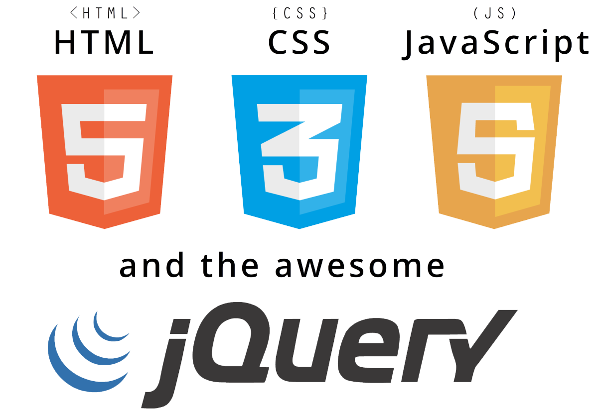

As I'm sure you've noticed by now; this is a website developed by myself. But why? As a student of Computing at De Montfort University, I am expected to create many different types of programs and systems as part of the course syllabus. This site is a project undertaken as part of my Front End Web Development module; which the aim was to create an interactive, responsive website using the technologies we had learned prior to the assessment being given. Namely: HTML5, CSS and JavaScript.
